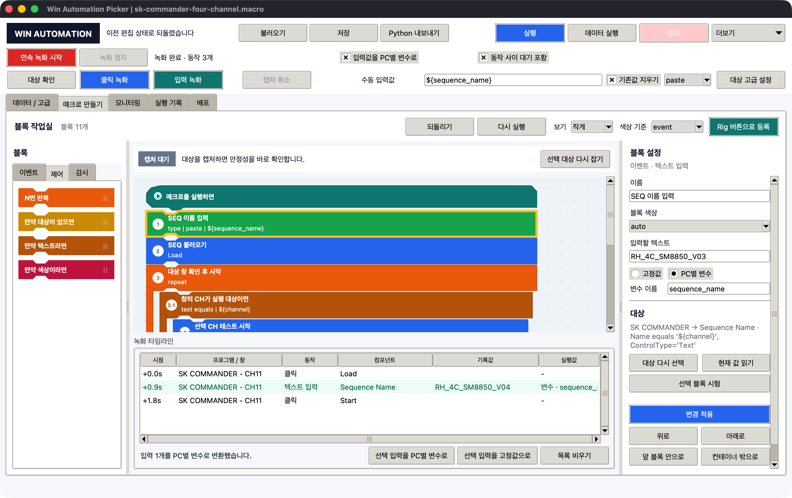

Scratch식 블록 작업실
현재 작업실은 단순히 블록 모양의 목록을 보여주는 화면이 아닙니다. 팔레트에서 블록을 끌어오고, 순서를 바꾸고, 반복/조건 컨테이너 안팎으로 이동하는 트리 편집기입니다.

화면의 예시는 SK COMMANDER - CH11에서 Load, Sequence Name 입력, Start 클릭을
녹화한 뒤 입력값을 sequence_name 변수로 바꾼 상태입니다. 중앙 블록, 오른쪽 설정,
아래 녹화 타임라인은 같은 recipe 데이터를 보여줍니다.
보기 밀도와 연결 상태
| 보기 | 일반 블록 | 블록 간격 | 용도 |
|---|---|---|---|
작게 |
46px | 2px | 기본값, 전체 흐름과 연결 관계 확인 |
보통 |
58px | 5px | 긴 이름과 조건값을 크게 확인 |
같은 실행 스택은 위아래 결합 홈이 맞닿아 보입니다. 반복·조건 블록의 왼쪽 색상 rail과
아래 footer 안에 들어간 블록은 자식입니다. 블록이 단순히 가까운 것인지 실제로 연결된
것인지는 번호 경로(3.1, 3.2)와 들여쓰기로도 확인할 수 있습니다.
블록 팔레트
이벤트
| 블록 | 역할 |
|---|---|
클릭 녹화 |
클릭할 component 캡처 |
텍스트 입력 |
입력칸과 입력값 기록 |
키 누르기 |
Enter, Tab, 단축키 실행 |
기다리기 |
지정 시간 대기 |
제어
| 블록 | 역할 |
|---|---|
N번 반복 |
안쪽 블록을 지정 횟수만큼 반복 |
만약 대상이 있으면 |
component가 발견될 때 실행 |
만약 텍스트라면 |
읽은 텍스트가 조건에 맞을 때 실행 |
만약 색상이라면 |
읽은 색상이 기대 색상과 가까울 때 실행 |
감시
| 블록 | 역할 |
|---|---|
텍스트 상태 |
텍스트 판정 결과 기록 |
색상 상태 |
색상 판정 결과 기록 |
AND 조건 묶음 |
안쪽 조건이 모두 맞아야 통과 |
OR 조건 묶음 |
안쪽 조건 중 하나 이상 맞으면 통과 |
블록 놓기
팔레트 블록을 클릭하면 맨 아래에 추가됩니다. 정확한 위치에 넣으려면 블록을 끌어 작업실의 파란 삽입선에 놓습니다.
- 드래그 중 나타나는 하늘색 14px 결합 영역에 놓아야 이동이 확정됩니다.
- 컨테이너의 안쪽 면에 놓으면 내부 블록이 됩니다.
- 컨테이너 왼쪽 여백의 삽입선에 놓으면 부모 단계로 이동합니다.
- 작업실이 길면 먼저 스크롤해 목적지를 보이게 한 뒤 드래그합니다.
- 놓는 순간의 마우스 좌표로 목적지를 다시 계산하므로 마지막 이동 이벤트가 빠져도 이전 위치에 잘못 놓이지 않습니다.
대상 캡처가 필요한 블록은 드롭 직후 다음 순서로 이어집니다.
- 대상 선택 대기 상태로 전환
- 외부 프로그램 component 클릭
- 지정했던 드롭 위치에 블록 생성
- 오른쪽 이름 입력칸 자동 선택
- 캡처 품질 결과 표시
컨테이너 사용
N번 반복, 세 종류의 만약, AND/OR 조건 묶음은 C자형 컨테이너입니다.
- 빈 안쪽의
여기에 블록 놓기에 드롭할 수 있습니다. - 내부 블록도 별도로 선택, 이름 변경, 이동, 복제, 삭제할 수 있습니다.
- 컨테이너 내부에서 다시 다른 컨테이너를 중첩할 수 있습니다.
- 컨테이너를 자기 자신 안으로 옮기는 동작은 차단됩니다.
- AND/OR 묶음에는 조건/모니터 블록만 들어갑니다.
오른쪽 블록 설정
선택한 블록 종류에 필요한 필드만 표시됩니다.
| 종류 | 표시되는 주요 필드 |
|---|---|
| 모든 블록 | 이름, 블록 색상 |
| 텍스트 입력 | 입력할 텍스트 |
| 기다리기 | 대기 시간(초) |
| 키 누르기 | 키 조합 |
| 반복 | 반복 횟수 |
| 텍스트 조건 | 조건, 기대값, 조건 결과 반전 |
| 색상 조건 | 기대값, 색상 오차, 조건 결과 반전 |
| 모니터/조건 | 탭, 장비 / CH, 표시 상태 |
현재 값 읽기는 선택한 component의 텍스트 또는 색상을 다시 읽습니다. 텍스트/색상 조건 블록에서는 읽은 값이 기대값으로 바로 저장됩니다.
이름과 색상
- 이름은
시작 클릭,CH11 PASS 확인처럼 업무 의미가 드러나게 적습니다. - Enter 또는
변경 적용으로 저장합니다. - 기본 색상은 이벤트 종류 기준입니다.
- 상단
색상 기준=window로 바꾸면 같은 창을 대상으로 하는 블록이 같은 색 계열로 표시됩니다. - 특정 블록만 별도 색상을 지정할 수도 있습니다.
이동, 복제, 삭제
마우스 drag/drop 외에 오른쪽 아래 버튼으로도 동일한 recipe tree를 편집할 수 있습니다.
| 버튼 | 결과 |
|---|---|
위로, 아래로 |
같은 컨테이너 안에서 한 단계 이동 |
앞 블록 안으로 |
바로 앞의 반복/조건/AND·OR 블록 안으로 이동 |
컨테이너 밖으로 |
현재 부모 컨테이너 바로 다음으로 이동 |
복제 |
선택 블록과 모든 내부 블록을 복제 |
풀기 |
컨테이너만 없애고 내부 블록은 유지 |
삭제 |
선택 블록과 내부 블록 삭제 |
삭제 직후 상단 되돌리기를 누르면 복원되고 다시 실행으로 삭제를 다시 적용할 수
있습니다. 키보드에서는 Delete, Ctrl+Z, Ctrl+Y, Ctrl+D도 지원합니다.
실행과 중지
- 상단
실행: 현재 변수 기본값으로 전체 블록 한 번 실행 데이터 실행:데이터 / 고급의 행마다 변수를 바꿔 순서대로 실행선택 블록 시험: 오른쪽에서 선택한 블록만 실행중지: 실행 thread에 중단 신호를 보내고Stopped로 기록
중지는 실행 중에만 활성화됩니다. 클릭/입력 블록이 있는 실제 시험은 SK Commander가
보이는 interactive Windows desktop에서 먼저 한 CH만 대상으로 확인합니다.
실행 전 검사
다음 상태에서는 실행이 시작되지 않고 문제가 있는 첫 블록이 선택됩니다.
- 클릭/입력/조건 블록에 대상 selector가 없음
- 키 블록의 키 조합이 비어 있음
- 반복/조건/AND/OR 컨테이너가 비어 있음
- AND/OR 안에 일반 실행 블록이 들어 있음